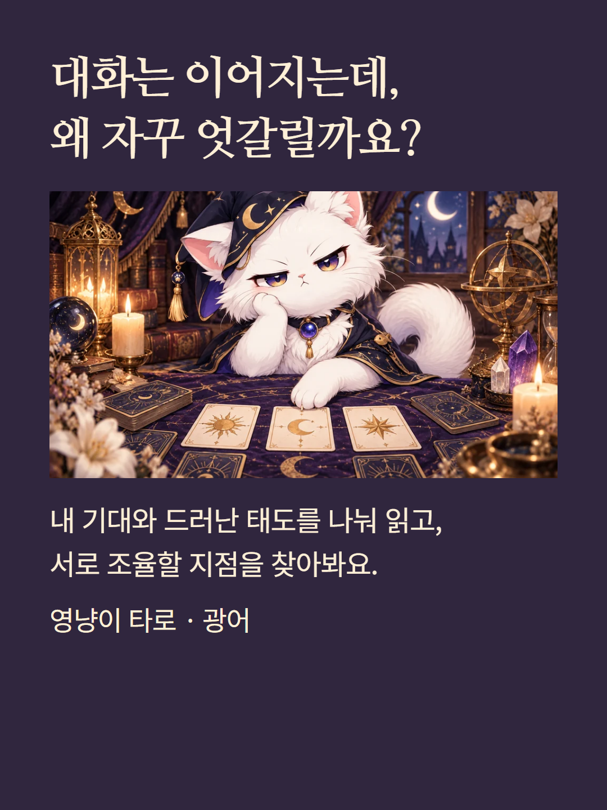
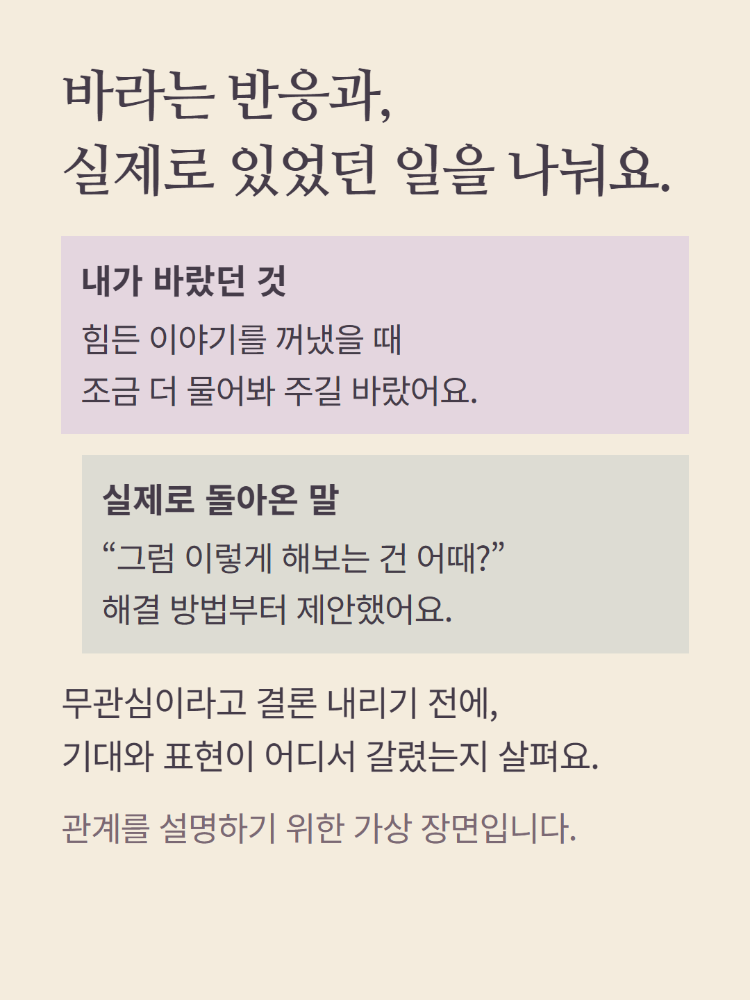
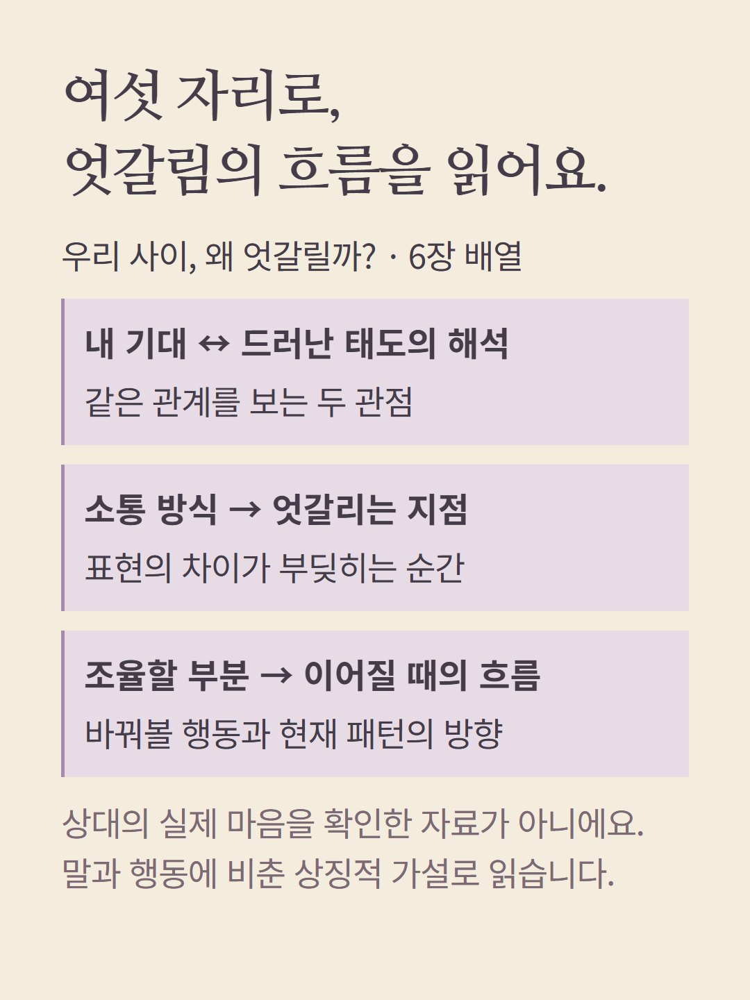
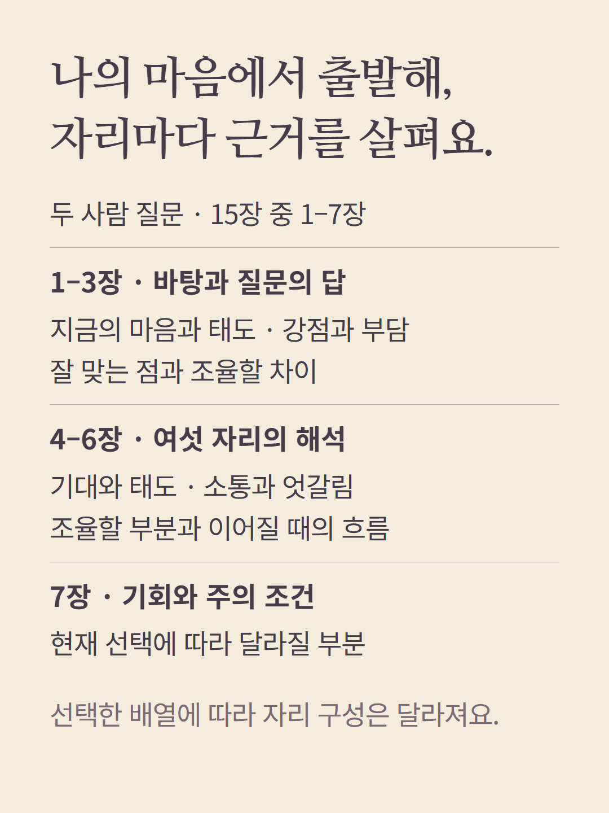
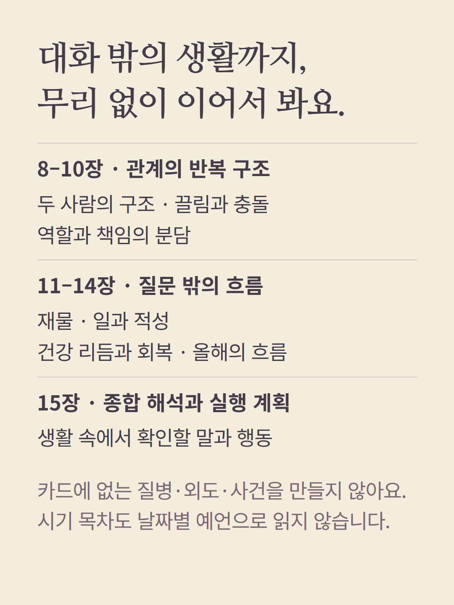
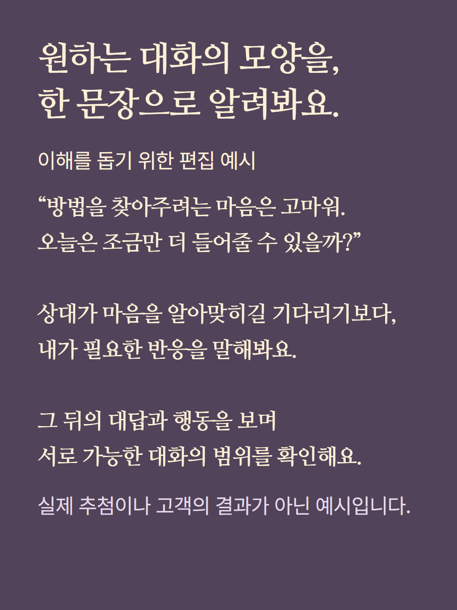
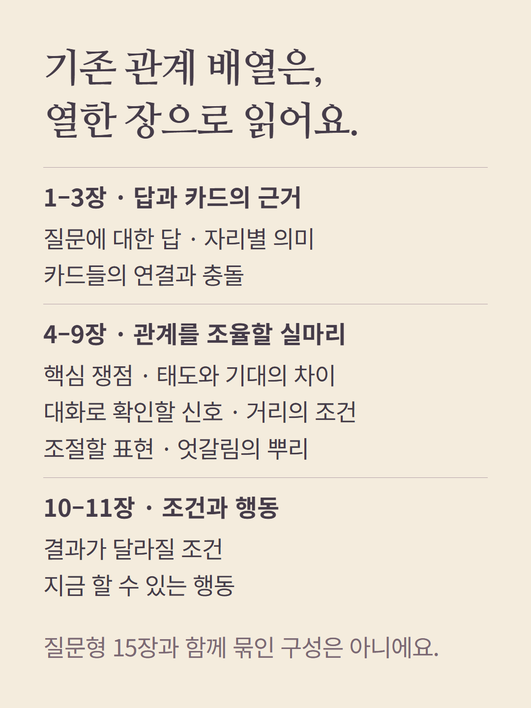
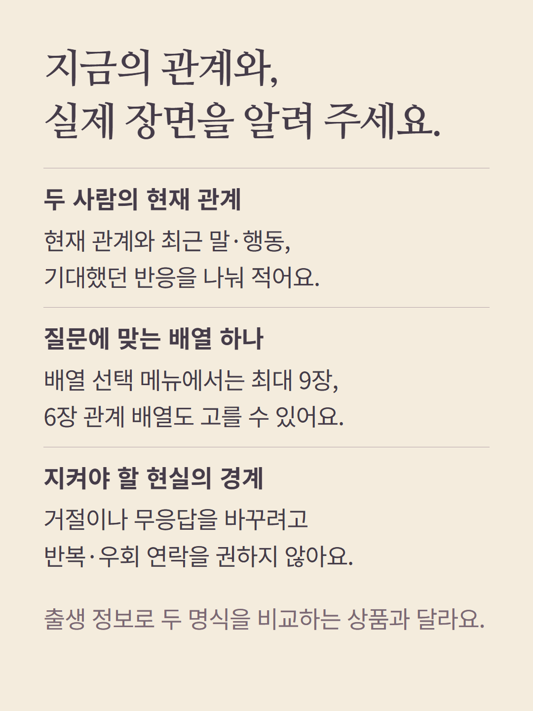
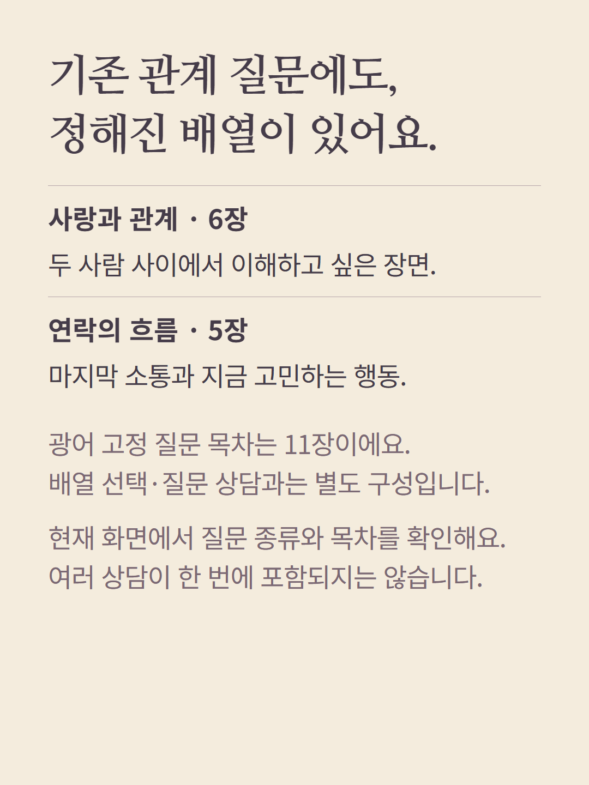
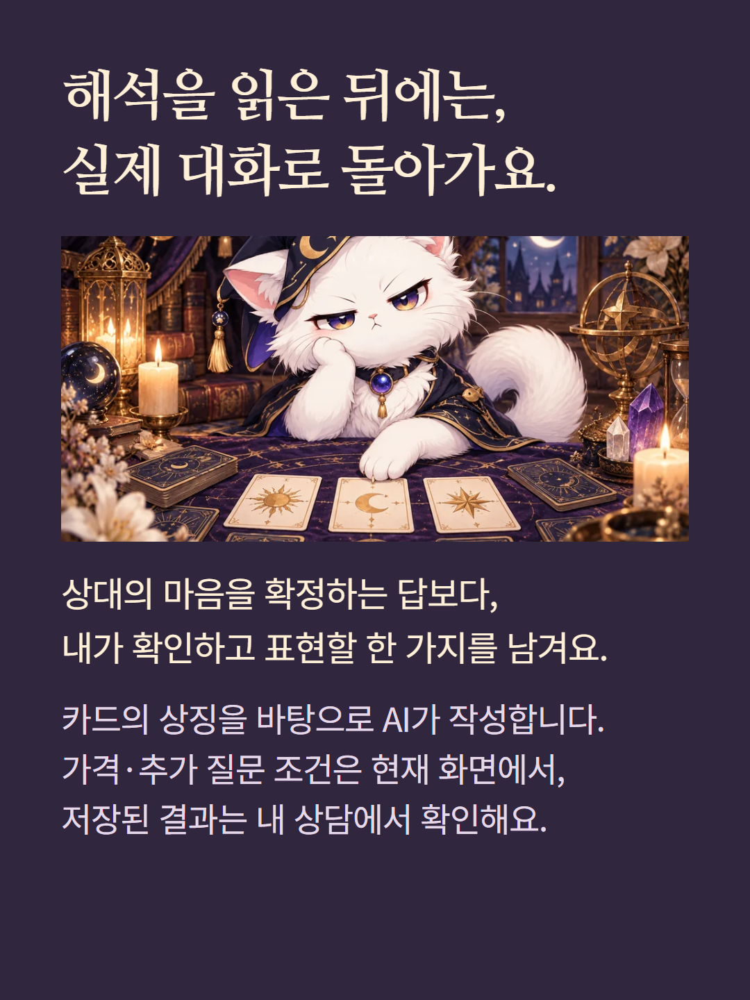

타로 광어의 ‘질문으로 고르는 배열’은 최대 9장 범위에서 배열 하나를 선택합니다. 이 안내는 6장 배열 ‘우리 사이, 왜 엇갈릴까?’를 예로 삼으며 항상 9장을 뽑는 구성은 아닙니다. 두 사람 질문 상담은 15장 목차, 기존 6장 관계 배열 상담은 11장 목차로 다릅니다. 출생 궁합 계산 대신 질문·관계 유형과 드러난 말·행동을 카드의 상징에 비춰 읽습니다. 상대의 속마음을 확인했다고 말하지 않으며 거절·무응답·연락 거부를 존중합니다. 공통 시기·생활 영역 목차는 카드 근거의 범위 안에서만 해석합니다. 예시는 실제 고객 결과가 아닌 가상 편집이며 AI 작성 상담입니다. 가격·추가 질문 조건은 기존 화면을 따릅니다. 기존 고정 질문 메뉴는 등급과 무관하게 종류별 카드 수를 사용하며 별도로 선택합니다.